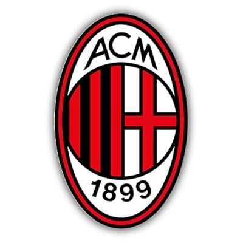
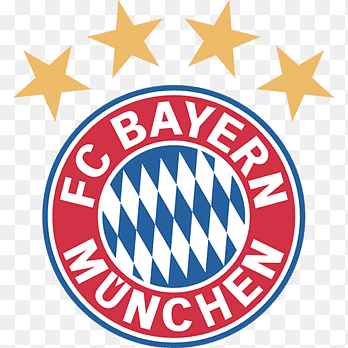

<h1>EQUIPOS QUE HAN GANADO MAS CHAMPIONS</h1>

<!DOCTYPE html>
<html>
<head>
    <title>Pàgina amb imatges, taules i llistes</title>
</head>
<body>
 
   
    <h2>TOP 5 GANADORES CHAMPIONS</h2>
    <ul>
        <li>REAL MADRID 15 CHAMPIONS</li>
        
    


        <li>MILAN 7 CHAMPIONS</li>
        


        <li>LIVERPOOL 6 CHAMPIONS</li>
        


        <li>BAYER MUNICH 6 CHAMPIONS</li>
        


        <li>BARÇA 5 CHAMPIONS</li>
        

    </ul>
